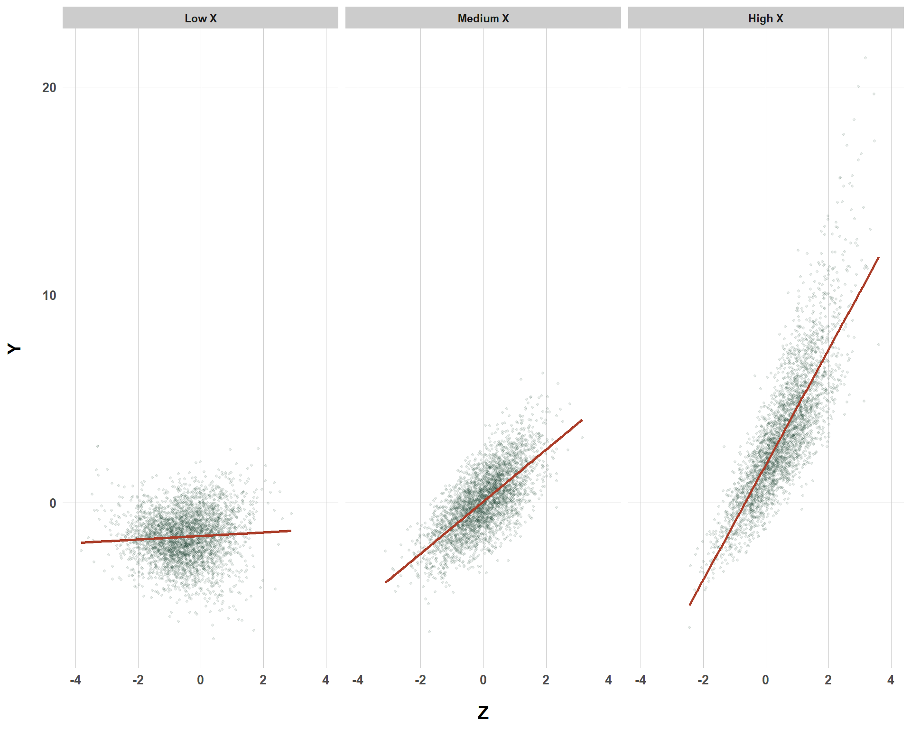

Obviously, we all know that we need to adjust for confounders, but what happens when we don’t adjust for them the right way?
Published
June 8, 2025
Code
# Load Librariespacman::p_load("dplyr", # Data Manipulation"ggplot2", # Data Visualization"tidyr", # Re-Shaping"scales", # Scaling Visualizations"ggtext", # Colored Text in Plots"gt", # Nice Tablesinstall =FALSE)# Define a Custom Themeblog_theme <-function() {theme_bw() +theme(panel.grid.major =element_line(color ="gray80", size =0.3),panel.grid.minor =element_blank(),panel.border =element_blank(),plot.background =element_rect(fill ="white", color =NA),plot.title =element_text(face ="bold", size =16, margin =margin(t =0, r =0, b =15, l =0)),axis.title.x =element_text(face ="bold", size =14, margin =margin(t =15, r =0, b =0, l =0)),axis.title.y =element_text(face ="bold", size =14, margin =margin(t =0, r =15, b =0, l =0)),strip.text =element_text(face ="bold"),axis.text.x =element_text(face ="bold", size =10), axis.text.y =element_text(face ="bold", size =10), axis.ticks.x =element_blank(), axis.ticks.y =element_blank(), strip.background =element_rect(fill ="grey80", color =NA),legend.title =element_text(face ="bold", size =14),legend.text =element_text(face ="bold", size =10, color ="grey25"), )}# Establish a Custom Color Schemecolors <-c("1"="#133a29","2"="#ab3d29","3"="#f9ba6d","4"="#314318","5"="#63221f")
Intro
I want to start this blog off acknowledging that this blog is exploratory for myself. I am not and will not be attempting to “teach” or anything like that in this post. However, the blog format is a helpful way for me to get my hands dirty and learn something new so, read at your own peril, but also, join me for the journey.
If you’ve read my posts before (or are familiar with the causal inference literature… if not, read this blog I wrote, then you know that adjusting for confounders is something you need to do if you’re not running an experiment (for the most part).
Less appreciated, although always mentioned, is the modeling side of things. That is, because we work with statistical models that have their own assumptions, we need to make sure that, in addition to adjusting for confounders, we also adjust for their correct functional form. But, I’ve always wondered, how consequential is it to adjust for a confounder assuming an entirely linear relationship if the actual relationship between a confounder and the outcome is non-linear?
Well, that is the entire point of this post. I’m really curious to see how, within this limited example, how the bias changes between an inclusion of a necessary control variable (misspecified) and the inclusion of the control variable correctly specified. I’m going to look at four different scenarios in the process.
First, I’ll take a look at a squared effect, which looks something like the following:
Code
set.seed(1234)n_obs <-10000exposure_effect <-1.5for (i in1:1000) {# Vary the Linear Effect of Z Between 1% and 300% of the Exposure Effect z_linear_effect <-runif(1, 0.01, 3) *1.5# Make the Curvilinear Effect Always 50% of the Linear Effect z_curv_effect <-0.5* z_linear_effect# Generate Variables Z <-rnorm(n_obs, 0, 1) X <-0.5* Z +rnorm(n_obs, 0, 1) Y <- exposure_effect * X + z_linear_effect * Z + z_curv_effect * Z^2+rnorm(n_obs, 0, 1) }squared_df <-data.frame(Z = Z, Y = Y)ggplot(squared_df, aes(x = Z, y = Y)) +geom_point(alpha =0.1, size =0.8, color ="#133a29") +geom_smooth(method ="loess", se =FALSE, size =1.5, color ="#ab3d29") +xlim(-4, 4) +labs(x ="Z",y ="Y" ) +blog_theme()
Quadratic Confounder-Outcome Effect
Then, I’ll take a look at another polynomial, examining a cubic effect instead:
Code
set.seed(1234)n_obs <-10000exposure_effect <-1.5for (i in1:1000) {# Vary the Linear Effect of Z Between 1% and 300% of the Exposure Effect z_linear_effect <-runif(1, 0.01, 3) * exposure_effect# Make the Squared Effect Always 50% of the Linear Effect z_squared_effect <-0.5* z_linear_effect# Make the Cubed Effect Always 50% of the Squared Effect z_cubed_effect <-0.5* z_squared_effect# Generate Variables Z <-rnorm(n_obs, 0, 1) X <-0.5* Z +rnorm(n_obs, 0, 1) Y <- exposure_effect * X + z_linear_effect * Z + z_squared_effect * Z^2+ z_cubed_effect * Z^3+rnorm(n_obs, 0, 1) }cubed_df <-data.frame(Z = Z, Y = Y)ggplot(cubed_df, aes(x = Z, y = Y)) +geom_point(alpha =0.1, size =0.8, color ="#133a29") +geom_smooth(method ="loess", se =FALSE, size =1, color ="#ab3d29") +xlim(-4, 4) +labs(x ="Z",y ="Y" ) +blog_theme()
Cubic Confounder-Outcome Effect
Then, I’ll shift away from polynomials and take a look at interaction effects. First, I’ll dive into interaction effects where the interaction effect remains fixed but the main effect varies, then I’ll do the inverse, fixing the main effect constant but letting the interaction effect vary. Regardless, either situation could produce a confounder-outcome effect that looks like this:
Code
set.seed(1234)n_obs <-10000exposure_effect <-1.5for (i in1:1000) {# Fixed Interaction Effect interaction_effect <-1# Vary Main Effect of Z z_main_effect <-runif(1, 0.01, 3) * exposure_effect# Generate Variables Z <-rnorm(n_obs, 0, 1) X <-0.5* Z +rnorm(n_obs, 0, 1) Y <- exposure_effect * X + z_main_effect * Z + interaction_effect * X * Z +rnorm(n_obs, 0, 1) }interaction_df <-data.frame(Z = Z, Y = Y, X = X)# Create Artificial Cut-Off Points for X to See How the Z Effect on Y Varies Across X Levelsinteraction_df <- interaction_df %>%mutate(X_bin =cut(X,breaks =quantile(X, probs =c(0, 1/3, 2/3, 1)),labels =c("Low X", "Medium X", "High X"),include.lowest =TRUE))ggplot(interaction_df, aes(x = Z, y = Y)) +geom_point(alpha =0.1, size =0.8, color ="#133a29") +geom_smooth(method ="lm", se =FALSE, size =1, color ="#ab3d29") +xlim(-4, 4) +facet_wrap(~X_bin) +labs(x ="Z",y ="Y" ) +blog_theme()

Confounder-Outcome Effect That Interacts with the Exposure
Squared Confounder-Outcome Simulation
Starting off, the following simulation code seeks to answer, “if we kept the squared effect of \(Z\) on \(Y\) constant, but let the linear component of the \(Z \rightarrow Y\) effect vary from 0.1x the size of the \(X \rightarrow Y\) effect to 3x the size of the \(X \rightarrow Y\) effect, how much bias do we see if we 1) omit the confounder entirely, 2) include the confounder but only specify it linearly, and 3) include the confounder and specify its correct functional form”?
Okay, that’s a long question, but we can summarize it as “if we generated data (\(n\) = 1000) 10,000 times, and let the linear confounder effect/exposure effect vary, specify different models that are increasingly wrong, how much bias do we get?”
# Create a Function to Estimate Consequences of Misspecification for A Lot of Runs and Different Scenariossquared_effect_dgp <-function(n_runs =10000, n_obs =1000, exposure_effect =1.5) {set.seed(1234)# Store Results results <-data.frame(sim =1:n_runs,z_effect_ratio =NA,model1_effect =NA, # Omits Zmodel2_effect =NA, # Includes Z Without Functional Formmodel3_effect =NA, # Includes Z with Functional Formmodel1_bias =NA, model2_bias =NA,model3_bias =NA )for (i in1:n_runs) {# Vary the Linear Effect of Z Between 1% and 300% of the Exposure Effect z_linear_effect <-runif(1, 0.01, 3) * exposure_effect# Make the Curvilinear Effect Always 50% of the Linear Effect z_curv_effect <-0.5* z_linear_effect# Generate Variables Z <-rnorm(n_obs, 0, 1) X <-0.5* Z +rnorm(n_obs, 0, 1) Y <- exposure_effect * X + z_linear_effect * Z + z_curv_effect * Z^2+rnorm(n_obs, 0, 1)# Model 1: Omits Z model1 <-lm(Y ~ X)# Model 2: Includes Z Without Functional Form model2 <-lm(Y ~ X + Z)# Model 3: Includes Z with Functional Form model3 <-lm(Y ~ X + Z +I(Z^2))# Extract X Coefficients est1 <-coef(model1)["X"] est2 <-coef(model2)["X"] est3 <-coef(model3)["X"] results$z_effect_ratio[i] <- z_linear_effect / exposure_effect results$model1_bias[i] <- est1 - exposure_effect results$model2_bias[i] <- est2 - exposure_effect results$model3_bias[i] <- est3 - exposure_effect }return(results)}# Run the Functionsquared_effect_dgp_results <-squared_effect_dgp(n_runs =10000, n_obs =1000, exposure_effect =1.5)# Plot the Resultsggplot(squared_effect_dgp_results, aes(x = z_effect_ratio)) +geom_point(aes(y = model1_bias, color ="Model 1: Omits Z"), alpha =0.2, size =0.8) +geom_point(aes(y = model2_bias, color ="Model 2: Linear Z Only"), alpha =0.2, size =0.8) +geom_point(aes(y = model3_bias, color ="Model 3: Z and Z²"), alpha =0.2, size =0.8) +scale_color_manual(values =c("Model 1: Omits Z"="#63221f","Model 2: Linear Z Only"="#ab3d29","Model 3: Z and Z²"="#133a29")) +labs(title ="",subtitle ="On average <b><span style='color:#63221f'>omitting Z</span></b> results in bias that grows in one direction while <b><span style='color:#ab3d29'>including Z linearly</span></b> creates bias<br>that spreads in both a negative and a positive direction while <b><span style='color:#133a29'>including Z and specifying its<br>non-linear effect</span></b> results in practically no bias.",x ="Size of the Linear Z Effect on Y Relative to the X Effect on Y",y ="Bias",color ="" ) +blog_theme() +theme(legend.position ="none",plot.subtitle = ggtext::element_markdown(size =11))
Bias When Excluding a Squared Effect
Cool! What do we see from this? Well, obviously, no matter how large our confounder effect / exposure effect ratio is, as long as we specify our model right. there’s basically no bias, with random variation creating any very small deviations from zero bias.
On the other side of the things, as we increase the linear confounder effect / exposure effect ratio for the model excluding \(Z\) entirely, the bias increases linearly in a positive manner. This is pretty intuitive when you think about it. If the effect of \(Z\) is actually really small, then any residual confounding when we don’t control for it will also be small. So very intuitive but also kind of obvious.
What is more interesting is the model where we include\(Z\) but do not specify its correct functional form. As we see, if the size of the confounder effect on \(Y\) is about equal to the exposure effect on \(Y\) or is maybe even smaller, then not specifying the functional form of \(Z\) correctly (at least in this scenario) isn’t that big of a deal. But, as the confounder effect grows, so too does the bias of a functional form mis-specification (in both a positive and negative direction). Still, the bias is not anywhere near as severe as the entire exclusion of \(Z\) from the model.
Cubed Confounder-Outcome Simulation
Here, I’m doing the exact same thing (keeping the polynomial effects fixed and varying the linear effect) but I’m spicing things up with a \(Z^3\) effect in addition to the \(Z^2\) effect.
# Create a Function to Estimate Consequences of Misspecification for A Lot of Runs and Different Scenarioscubed_effect_dgp <-function(n_runs =10000, n_obs =1000, exposure_effect =1.5) {set.seed(1234)# Store Results results <-data.frame(sim =1:n_runs,z_effect_ratio =NA,model1_effect =NA, # Omits Zmodel2_effect =NA, # Includes Z Without Functional Formsmodel3_effect =NA, # Includes Z with Squared Functional Formmodel4_effect =NA, # Includes Z with All Functional Formsmodel1_bias =NA, model2_bias =NA,model3_bias =NA )for (i in1:n_runs) {# Vary the Linear Effect of Z Between 1% and 300% of the Exposure Effect z_linear_effect <-runif(1, 0.01, 3) * exposure_effect# Make the Squared Effect Always 50% of the Linear Effect z_squared_effect <-0.5* z_linear_effect# Make the Cubed Effect Always 50% of the Squared Effect z_cubed_effect <-0.5* z_squared_effect# Generate Variables Z <-rnorm(n_obs, 0, 1) X <-0.5* Z +rnorm(n_obs, 0, 1) Y <- exposure_effect * X + z_linear_effect * Z + z_squared_effect * Z^2+ z_cubed_effect * Z^3+rnorm(n_obs, 0, 1)# Model 1: Omits Z model1 <-lm(Y ~ X)# Model 2: Includes Z Without Functional Forms model2 <-lm(Y ~ X + Z)# Model 3: Includes Z with Squared Functional Form model3 <-lm(Y ~ X + Z +I(Z^2))# Model 4: Includes Z with All Functional Forms model4 <-lm(Y ~ X + Z +I(Z^2) +I(Z^3))# Extract X Coefficients est1 <-coef(model1)["X"] est2 <-coef(model2)["X"] est3 <-coef(model3)["X"] est4 <-coef(model4)["X"] results$z_effect_ratio[i] <- z_linear_effect / exposure_effect results$model1_bias[i] <- est1 - exposure_effect results$model2_bias[i] <- est2 - exposure_effect results$model3_bias[i] <- est3 - exposure_effect results$model4_bias[i] <- est4 - exposure_effect }return(results)}# Run the Functioncubed_effect_dgp_results <-cubed_effect_dgp(n_runs =10000, n_obs =1000, exposure_effect =1.5)# Plot the Resultsggplot(cubed_effect_dgp_results, aes(x = z_effect_ratio)) +geom_point(aes(y = model1_bias, color ="Model 1: Omits Z"), alpha =0.2, size =0.8) +geom_point(aes(y = model2_bias, color ="Model 2: Linear Z Only"), alpha =0.2, size =0.8) +geom_point(aes(y = model3_bias, color ="Model 3: Z and Z²"), alpha =0.2, size =0.8) +geom_point(aes(y = model4_bias, color ="Model 4: Z and Z² and Z³"), alpha =0.2, size =0.8) +scale_color_manual(values =c("Model 1: Omits Z"="#63221f","Model 2: Linear Z Only"="#ab3d29","Model 3: Z and Z²"="#f9ba6d","Model 4: Z and Z² and Z³"="#133a29")) +labs(title ="",subtitle ="On average <b><span style='color:#63221f'>omitting Z</span></b> results in bias that grows in one direction while <b><span style='color:#ab3d29'>including Z linearly</span></b> creates bias<br>that spreads in both a negative and a positive direction which is slighy reduced when <b><span style='color:#f9ba6d'>a squared term for Z<br>is introduced</span></b> while <b><span style='color:#133a29'>including Z and specifying all its non-linear effects</span></b> results in practically no bias.",x ="Size of the Linear Z Effect on Y Relative to the X Effect on Y",y ="Bias",color ="" ) +blog_theme() +theme(legend.position ="none",plot.subtitle = ggtext::element_markdown(size =11))
Bias When Excluding a Cubed Effect
And, as you can see, adding a cubed effect doesn’t change much (again, please keep in mind that I’m fixing the polynomial effects and that this simulation exercise is not systematic… there’s a lot of nuance here that I’m not covering). The biggest gap in bias is the total failure to adjust for \(Z\) entirely. Bias increases as the confounder effect size grows and confounder effects are mis-specified, but adding polynomials helps reduce the bias.
One thing that might go unnoticed though is the y-axis here. Look at how it goes up to 4 instead of 2 (like the squared effect)! The exposure effect in the squared and cubed effect remains the same, but the bias has increased by about double on the extreme end of the confounder effect / exposure effect size. I’m not really sure why, and there’s a chance I’ve built this into the data generating process without realizing, but that’s also interesting. Well, interesting to a point… we would never worry about that much bias if we already knew about \(Z\) and to adjust for it in the first place. Again, adjusting for \(Z\) without specifying any polynomials still results bias but dramatically less.
Interactive Confounder-Outcome Simulation (Varying Main Effect)
Next, I’m moving away from polynomials and shifting to interaction effects. Here, the main effect is varying but the interaction effect is remaining constant.
interaction_dgp_varying_z_main <-function(n_runs =10000, n_obs =1000, exposure_effect =1.5) {set.seed(1234) results <-data.frame(sim =1:n_runs,z_effect_ratio =NA,model1_effect =NA, # Omits Zmodel2_effect =NA, # Includes Z onlymodel3_effect =NA, # Includes Z and X:Zmodel1_bias =NA,model2_bias =NA,model3_bias =NA )for (i in1:n_runs) {# Keep the Interaction Effect Fixed interaction_effect <-1# Vary the Main Effect of Z z_main_effect <-runif(1, 0.01, 3) * exposure_effect# Generate Variables Z <-rnorm(n_obs, 0, 1) X <-0.5* Z +rnorm(n_obs, 0, 1) Y <- exposure_effect * X + z_main_effect * Z + interaction_effect * X * Z +rnorm(n_obs, 0, 1)# Models model1 <-lm(Y ~ X) model2 <-lm(Y ~ X + Z) model3 <-lm(Y ~ X + Z + X:Z) # Extract X Coefficients est1 <-coef(model1)["X"] est2 <-coef(model2)["X"] est3 <-coef(model3)["X"]# Store Results results$z_effect_ratio[i] <- z_main_effect / exposure_effect results$model1_bias[i] <- est1 - exposure_effect results$model2_bias[i] <- est2 - exposure_effect results$model3_bias[i] <- est3 - exposure_effect }return(results)}interaction_results_varying_z_main <-interaction_dgp_varying_z_main(n_runs =10000, n_obs =1000, exposure_effect =1.5)ggplot(interaction_results_varying_z_main, aes(x = z_effect_ratio)) +geom_point(aes(y = model1_bias, color ="Model 1: Omits Z"), alpha =0.2, size =0.8) +geom_point(aes(y = model2_bias, color ="Model 2: Adds Z Only"), alpha =0.2, size =0.8) +geom_point(aes(y = model3_bias, color ="Model 3: Adds Z and Interaction"), alpha =0.2, size =0.8) +scale_color_manual(values =c("Model 1: Omits Z"="#63221f","Model 2: Adds Z Only"="#ab3d29","Model 3: Adds Z and Interaction"="#133a29" )) +labs(title ="",subtitle ="On average <b><span style='color:#63221f'>omitting Z</span></b> results in bias that grows in one direction while <b><span style='color:#ab3d29'>including Z linearly</span></b> creates bias in<br>both a negative and a positive direction while <b><span style='color:#133a29'>including Z and specifying the interactive effect</span></b> results<br>in practically no bias.",x ="Size of the Main Z Effect on Y Relative to the X Effect on Y",y ="Bias",color ="" ) +blog_theme() +theme(legend.position ="none",plot.subtitle = ggtext::element_markdown(size =11))
Bias When Excluding an Interaction Effect with the Main Effect Varying
It looks very familiar to the cubed effect simulation exercise. But, a key difference here is the size of the bias across the x-axis for the model that includes the confounder but mis-specifies its effect on \(Y\). It’s basically constant across the entire range of the confounder effect / exposure effect ratio. Substantively, at least for this data generating process, it means that, on average, a failure to specify an interactive effect for \(Z\) results in the same bias regardless of how large the confounder effect / exposure effect ratio is.
And lastly, I’ll be taking a look at the consequences of failing to adjust for an interactive effect where the main effect size is fixed but the interaction effect is changing.
interaction_dgp_varying_z_interaction <-function(n_runs =10000, n_obs =1000, exposure_effect =1.5) {set.seed(1234) results <-data.frame(sim =1:n_runs,z_effect_ratio =NA,model1_effect =NA, # Omits Zmodel2_effect =NA, # Includes Zmodel3_effect =NA, # Includes Z and X:Zmodel1_bias =NA,model2_bias =NA,model3_bias =NA )for (i in1:n_runs) {# Vary Interaction Effect Size Relative to the Exposure Effect interaction_effect <-runif(1, 0.01, 3) * exposure_effect# Keep the Main Effect Constant z_main_effect <-1# Generate Variables Z <-rnorm(n_obs, 0, 1) X <-0.5* Z +rnorm(n_obs, 0, 1) Y <- exposure_effect * X + z_main_effect * Z + interaction_effect * X * Z +rnorm(n_obs, 0, 1)# Fit models model1 <-lm(Y ~ X) model2 <-lm(Y ~ X + Z) model3 <-lm(Y ~ X + Z + X:Z)# Extract X Coefficients est1 <-coef(model1)["X"] est2 <-coef(model2)["X"] est3 <-coef(model3)["X"]# Store results results$z_effect_ratio[i] <- interaction_effect / exposure_effect results$model1_bias[i] <- est1 - exposure_effect results$model2_bias[i] <- est2 - exposure_effect results$model3_bias[i] <- est3 - exposure_effect }return(results)}interaction_results_varying_z_interactive <-interaction_dgp_varying_z_interaction(n_runs =10000, n_obs =1000, exposure_effect =1.5)ggplot(interaction_results_varying_z_interactive, aes(x = z_effect_ratio)) +geom_point(aes(y = model1_bias, color ="Model 1: Omits Z"), alpha =0.2, size =0.8) +geom_point(aes(y = model2_bias, color ="Model 2: Adds Z Only"), alpha =0.2, size =0.8) +geom_point(aes(y = model3_bias, color ="Model 3: Adds Z and Interaction"), alpha =0.2, size =0.8) +scale_color_manual(values =c("Model 1: Omits Z"="#63221f","Model 2: Adds Z Only"="#ab3d29","Model 3: Adds Z and Interaction"="#133a29" )) +labs(title ="",subtitle ="On average <b><span style='color:#63221f'>omitting Z</span></b> results in bias that grows in one direction while <b><span style='color:#ab3d29'>including Z linearly</span></b> creates bias in<br>both a negative and a positive direction while <b><span style='color:#133a29'>including Z and specifying the interactive effect</span></b> results<br>in practically no bias.",x ="Size of the Interactive Z Effect on Y Relative to the X Effect on Y",y ="Bias",color ="" ) +blog_theme() +theme(legend.position ="none",plot.subtitle = ggtext::element_markdown(size =11))
Bias When Excluding an Interaction Effect with the Interaction Effect Varying
Well now we have something that is totally different! For both biased models (excluding \(Z\) and excluding \(Z\) interacted with \(X\)), the degree to which they increase with bias increases at about the same rate as the confounder effect / exposure effect ratio increases. However, they are separated basically by their starting point on the y-axis. That’s interesting!
Another interesting key point of difference here is the amount of variability that happens as the x-axis increases. The bias really bunches together when the confounder effect is about 0.1-0.5x the size of the exposure effect, but noticeably increases as the confounder effect approaches the exposure effect before all mayhem breaks out. I also find this very interesting!
As a final point though, it’s important to take a look at the y-axis though and realize that the magnitude of bias in this scenario is really not all that great (hence the -1, 1 y-axis range). But, this range is probably more indicative of the interaction effects I specified rather than some property of omitting interaction effects in general.
Conclusion
So, what can you take away from this blog? Well, for the most part, again, within the context of this simulation exercise, while getting the functional form specified correctly is important, the bias of excluding a confounder outright seems to have a way larger consequence. Which is not surprising at all. However, the final analysis of interaction effects kind of shows that this might not always be true… there were cases when excluding the confounder exhibited less bias than including the confounder without its interaction effect. I wonder if there’s something to that or if its just a relic of my simulation exercise or some sort of oversight on my end…
And this leads to the ultimate caveat of this blog. This blog was purely exploratory for me. I found writing this fun, but not definitive. So please keep that in mind!